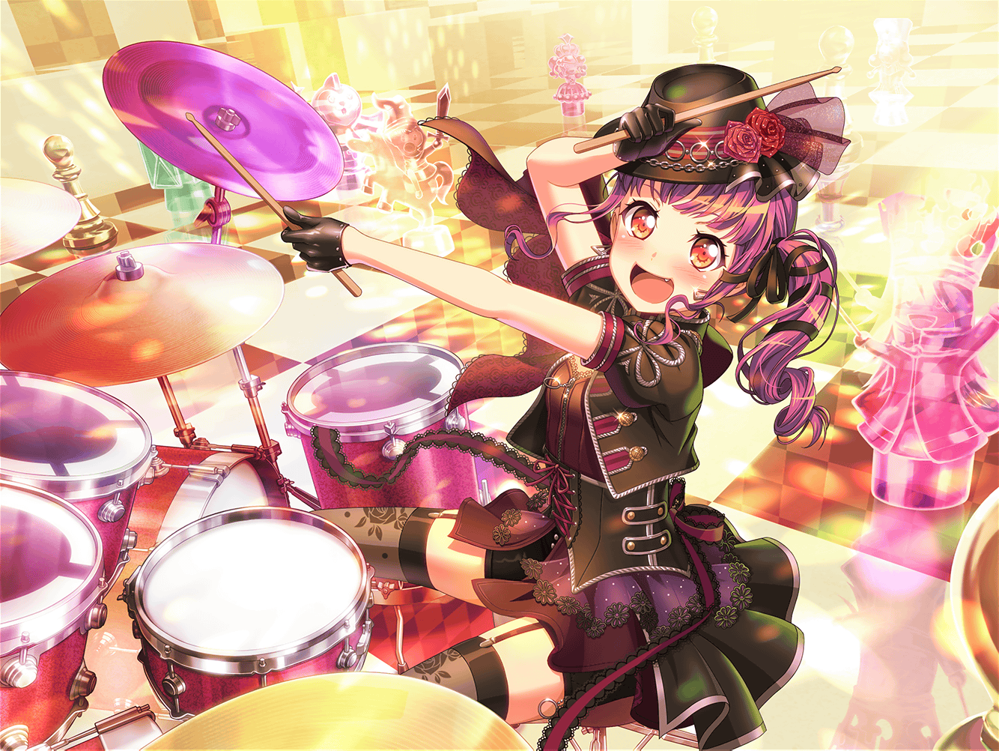

江戸川楽器店
あこ
あっ、まりなさん、{{userName}}さん！
こんにちは～
まりな
お～、あこちゃん！
この前のRoseliaのライブ、すっごく好評だったよ～！
ありがとね～！
あこ
ホントっ！？ よかった～！
まりな
あこちゃんのドラムの安定感、本当にすごかった。
みんなの演奏をしっかり支えてる感じがしたよ。
キミもそう思ったでしょ？
あこ
ホントに！？ やったー！
まりなさん達にそう言ってもらえるとホントに嬉しー！
まりな
ううん。私達だけじゃなくて
あの日ライブに来てたお客さん達もみんな言ってたよ
あこ
そ、それはあれかな……っ！
あこの中に眠りし闇の力が……えっと……ドドーン！ って……
解放されたのかも……っ！
まりな
ふふ。
闇の力もあるかもしれないけど、
あれはあこちゃんの実力だよ
まりな
本当に頼りになるドラマーになったと思うよ
あこ
ううん！ まだまだだよ！
あこはもっともーっと練習して、
もっともーっとカッコいいドラマーになるんだ！
まりな
あこちゃん、頼もしいなあ〜
あこ
この前ね、おねーちゃんが言ってくれたの！
『これからも二人で一緒にカッコよくなっていこうな』って
あこ
だから、あこがカッコよくなれば、
おねーちゃんもさらにカッコよくなって――
あこ
おねーちゃんがさらにカッコよくなったら、
あこもさらにさらにカッコよくなっていくんだよ！
まりな
なるほどー……
あこちゃんと巴ちゃんと二人で、切磋琢磨って感じかな？
あこ
セッサ……タクマ……？
う、うん……多分そうなのかな？
まりな
切磋琢磨は、
お互いに励ましあって、成長していくってこと。
二人の関係にピッタリだと思うよ
あこ
ん～、そうかな～。
あこはなんか違う気もするー
まりな
そう？ どこが違うの？
あこ
えっとね、あこはとにかく
前を走るおねーちゃんを追いかけるの！
あこ
別に励ましあうとか、そういうのがなくったって、
あこは何がなんでもおねーちゃんを追いかける！
まりな
そっか。
そう言われると、確かに切磋琢磨とはちょっと違うのかもね
あこ
ねぇ、まりなさん？
そしたら、あことおねーちゃんみたいな関係って
四字熟語でなんていうの？
まりな
え……？ あこちゃんと巴ちゃんを示す四字熟語……？
えーと、なんだろう……？
まりな
こんな四字熟語あるかわからないけど……
あこ
なになに！？ 聞かせて！？
まりな
えっとね……
爆走姉妹……かな？
あこ
爆走姉妹……！？
わ、なんかそれカッコイイよね！
あこ、気に入っちゃった！
まりな
あはは……気に入ってもらえてよかった
あこ
爆走姉妹、宇田川あこ！
これからもおねーちゃんを追いかけ続けるね！